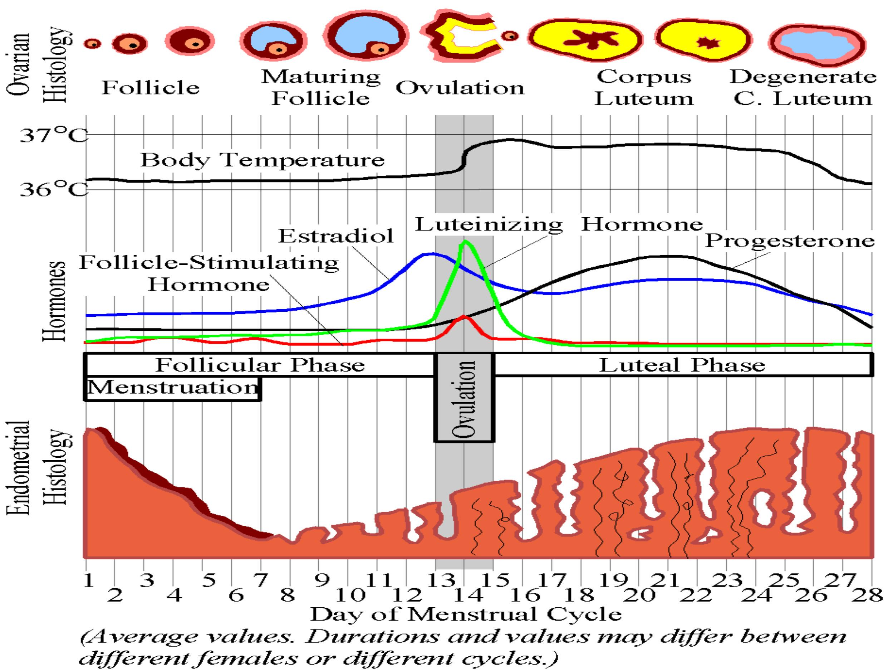
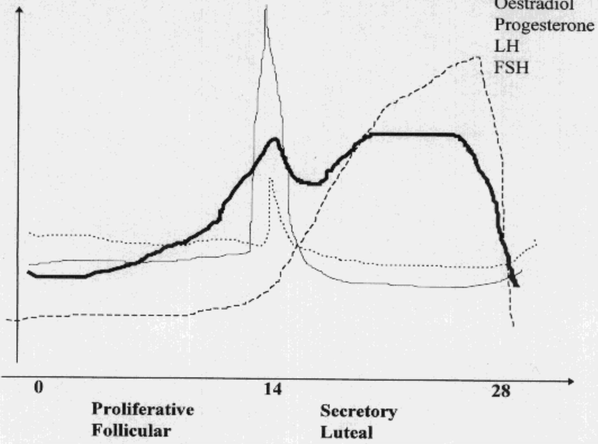
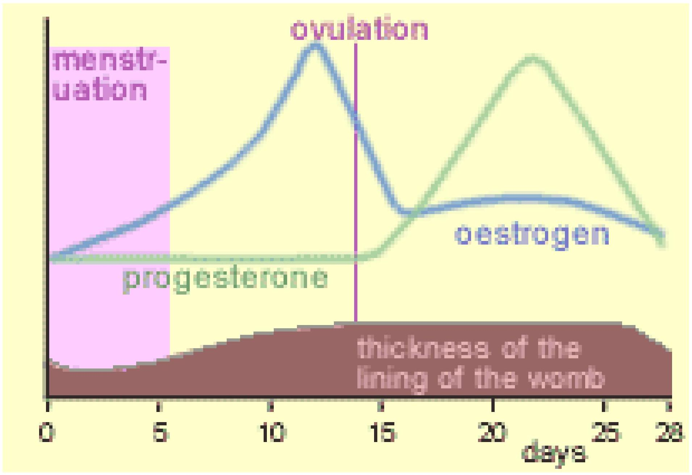

Lecture 3: The Female Reproductive Cycle and Human Sexuality
The Ovarian and Uterine Cycles
The female reproductive cycle is a rhythmical series of physiological changes that occur in fertile women, resulting in the release of a mature ovum for fertilization. If fertilization fails to occur, vaginal bleeding (menstruation) occurs. The cycle prepares the ovum for fertilization and the uterus for implantation, controlled through the endocrine system.
Definitions
- Menstrual Cycle: A series of physiological changes in fertile women, with an average length of 28 days (ranging from 21-35 days).
- Menstruation: A vaginal bleeding that occurs monthly in adolescent girls and premenopausal women.
- Menarche: A woman's first menstruation, typically occurring around age 12.
- Menopause: The end of a woman's reproductive phase, commonly occurring between ages 45 and 55.
The physiological changes during the menstrual cycle can be observed at the neuroendocrine level, in the ovaries (Ovarian Cycle), and in the uterus (Uterine Cycle). These changes define the phases of the cycle.
Ovarian Cycle
The ovarian cycle involves the development and release of an egg.
- Follicular Phase (Days 1-13): Follicle-stimulating hormone (FSH) stimulates the maturation of several ovarian follicles. These follicles compete for dominance, with only one typically reaching full maturity (Graafian follicle). As they mature, follicles secrete increasing amounts of estrogen, which thickens the endometrium.
- Ovulation (Around Day 14): A surge in luteinizing hormone (LH) causes the mature follicle to rupture and release its secondary oocyte (ovum) into the fallopian tube.
- Luteal Phase (Days 14-28): The ruptured follicle develops into the corpus luteum, which produces significant amounts of progesterone and some estrogen. Progesterone prepares the endometrium for implantation. If fertilization does not occur, the corpus luteum involutes, and falling progesterone levels trigger menstruation.
Uterine Cycle
The uterine cycle involves changes in the lining of the uterus (endometrium).
- Menstrual Phase (Days 1-4): The functional layer of the endometrium is shed, resulting in menstrual bleeding. This is due to a sharp drop in estrogen and progesterone levels.
- Proliferative Phase (Days 5-13): Facilitated by rising estrogen levels from the developing follicles, the stratum functionale of the endometrium is rebuilt. The tissue renews, vascularity increases, and the endometrium thickens.
- Secretory Phase (Days 16-28): Under the influence of progesterone from the corpus luteum, the endometrium becomes receptive to implantation. The stroma becomes loose and edematous, blood vessels become thickened and twisted, and glands become tortuous and secrete nutrients.
Hormonal Regulation of the Menstrual Cycle
The menstrual cycle is controlled by a complex interplay of hormones produced by the hypothalamus, pituitary gland, and ovaries.
Pituitary Hormones
- FSH (Follicle-Stimulating Hormone): Stimulates the development of follicles in the ovary and stimulates the ovaries to produce estrogen.
- LH (Luteinizing Hormone): Stimulates the release of the egg from the ovary (ovulation) mid-cycle. It also stimulates the ovary to produce progesterone to maintain the uterine lining.
Ovarian Hormones
- Oestrogen: Stimulates the lining of the uterus to build up in preparation for pregnancy. It also affects the pituitary gland. As oestrogen levels rise, they initially suppress LH production, but at mid-cycle, high levels give a positive feedback, resulting in the LH surge that triggers ovulation.
- Progesterone: Produced by the corpus luteum after ovulation, progesterone maintains the thick lining of the uterus and stimulates the growth of blood vessels in preparation for pregnancy. It helps maintain pregnancy if a fertilised ovum arrives.
Concepts in Human Sexuality
Definitions in Sexuality
- Human Sexuality: A concept that encompasses the physical capacity for sexual arousal and pleasure (libido), as well as personalized and shared social meanings, including sexual behavior and the formation of sexual and gender identities.
- Sexual Identity: The sex of rearing or definitive sex (maleness or femaleness).
- Gender Identity: The personal, private conviction each individual has about being "feminine" or "masculine."
- Sexual Behaviour: Actions that are empirically observable, including sexual partnerships and sexual acts.
- Sexual Ideology/Meanings: People's ideas about sexuality, cultural understandings of what men and women are, and how they should interact.
- Sexual Drives and Enjoyment: This includes the formation of sexual identities, socially conditioned sex drives, and perceptions of pleasure.
Sexual Response Cycle
The human sexual response involves vasocongestion and myotonia, and typically progresses through four stages:
- Excitement: The initial stage of arousal.
- Plateau: A period of intensified arousal before orgasm.
- Orgasm: The climax of sexual excitement.
- Resolution: The body returns to its unaroused state.
Sexual Dysfunction
Sexual dysfunction refers to any form of impairment of the ability to achieve sexual satisfaction during intercourse. It is often due to difficulty in the interpersonal relationship between partners.
Male Sexual Dysfunctions:
- Erectile Dysfunction
- Premature Ejaculation
- Retarded Ejaculation
- Lack of or excessive sexual desire
Female Sexual Dysfunctions:
- Vaginismus
- Dyspareunia (painful intercourse)
- Lack of or excessive sexual desire
- Anorgasmia (inability to achieve orgasm)